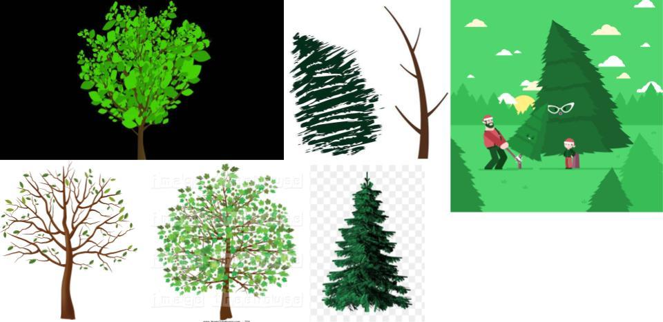
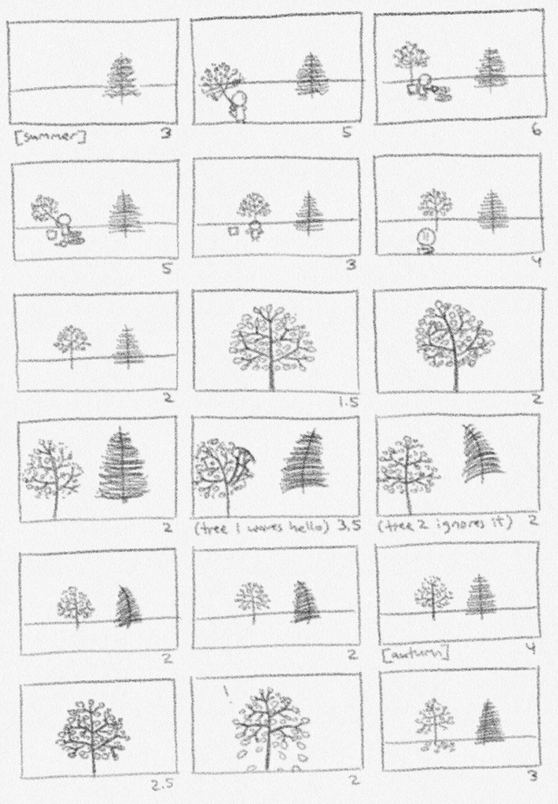
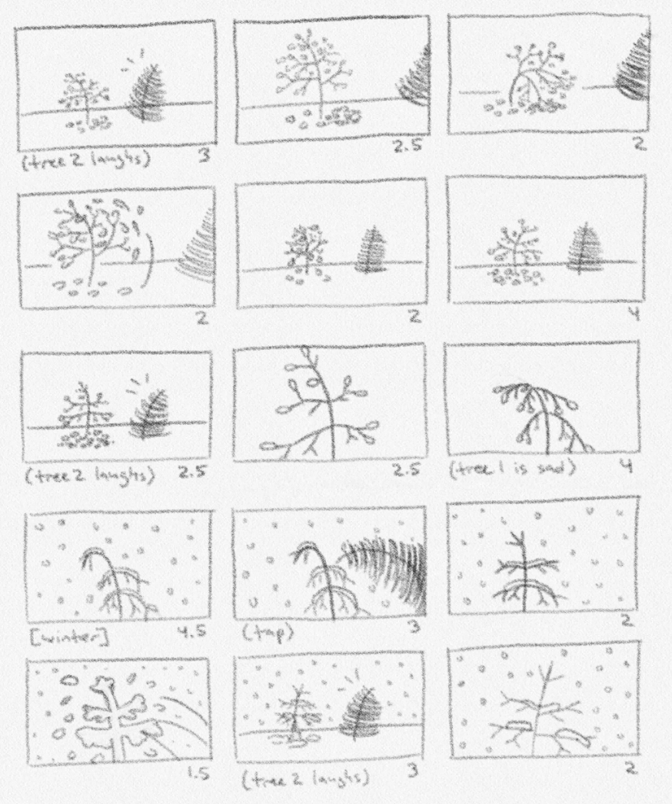
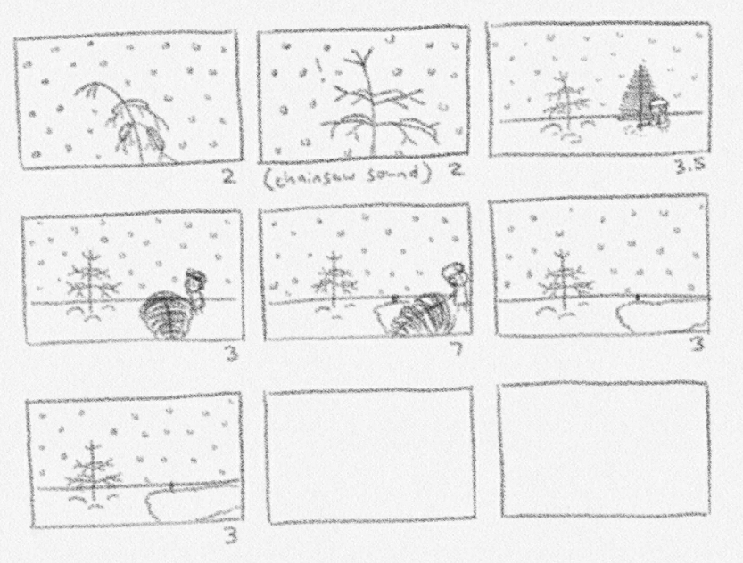

Tree is an animated short film about a deciduous tree that tries to be friends with a pine tree, only to be made fun of and teased thereafter. The deciduous tree feels stuck having to live with this, until a sudden event changes everything.
This was created as the final project of a Motion Graphics class at NYU in the Fall 2020 semester. It was also shown at the IDM Film Festival that semester. The project was created from November 6 to December 4. I created the assets in Illustrator and animated everything in After Effects. The music is from Fesliyan Studios and the sound effects are from Freesound.

  
More information about the process of creating this short film will be posted later.